机器学习线性代数基础
【已完结】
概述
本书介绍
数学是机器学习绕不开的基础知识，传统教材的风格偏重理论定义和运算技巧，想以此高效地打下机器学习的数学基础，针对性和可读性并不佳。本书以机器学习涉及的线性代数核心知识为重点，进行新的尝试和突破：从坐标与变换、空间与映射、近似与拟合、相似与特征、降维与压缩这5个维度，环环相扣地展开线性代数与机器学习算法紧密结合的核心内容，并分析推荐系统和图像压缩两个实践案例，在介绍完核心概念后，还将线性代数的应用领域向函数空间和复数域中进行拓展与延伸；同时极力避免数学的晦涩枯燥，充分挖掘线性代数的几何内涵，并以Python语言为工具进行数学思想和解决方案的有效实践。
本书适合实践于数据分析、信号处理等工程领域的读者，也适合在人工智能、机器学习领域进行理论学习和实践，希望筑牢数学基础的读者，以及正在进行线性代数课程学习的读者阅读。
(摘自：机器学习线性代数基础 (豆瓣) (douban.com))
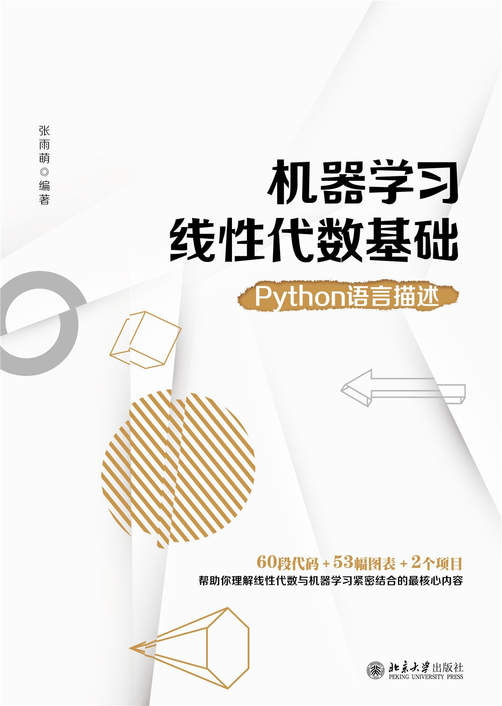
阅读目的
掌握机器学习数学基础，记录学习难点。
相关资料
《机器学习线性代数基础：Python语言描述》学习资料——
链接：https://eyun.baidu.com/s/3c3QH00S
提取码：zD33
含：ppt、源代码、numpy介绍文档
坐标与变化（第一章）
向量
基本意义
二维向量
可以被理解为点(4,5)，也可被认为(0,0)到(4,5)的有向线段。
列向量
一般来说，都是使用列向量，这是因为方便进行向量坐标变换、空间映射。
乘法
内积（点乘）
对应位置相乘，结果相加，得到一个数。
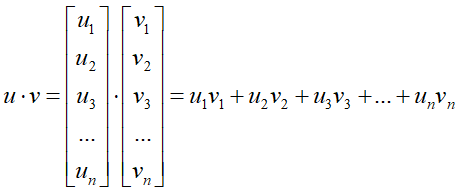
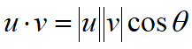
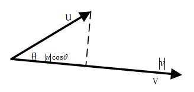
含义:a在b上投影长度
实现：
1
2
3
4import numpy as np
u = np.array([3, 5, 2])
v = np.array([1, 4, 7])
print(np.dot(u, v))
- 外积（叉乘）
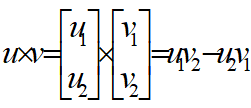
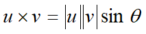
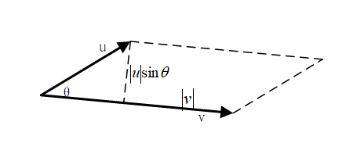
含有：二维平面中向量的外积表示两个向量张成的平行四边形的面积。
实现：
1 | import numpy as np |
基底
基底条件
向量数量足够
如三位空间的每一个基向量维数必须是3
满足线性无关
张成空间
定义：对于一组向量，由他的所有线性组合所构成的空间就称之为这一组向量的张成空间。
矩阵
特殊矩阵
方阵
定义：行数和列数相等的一类矩阵
实现：
1
2
3
4
5
6
7import numpy as np
A = np.array([[1, 1, 1, 1],
[2, 2, 2, 2],
[3, 3, 3, 3],
[4, 4, 4, 4]])
print(A)
print(A.shape)转置与对称矩阵
转置
定义：行和列上的元素进行位置互换
实现:
1
2
3
4
5import numpy as np
A = np.array([[1, 2, 3, 4],
[5, 6, 7, 8]])
print(A)
print(A.T)对称矩阵
左上到右下对角线对称
零矩阵
定义：对于所有元素都等于0的矩阵，我们将其称之为零矩阵，记作O
实现：
1
2
3import numpy as np
A = np.zeros([5, 3])
print(A)对角矩阵
定义：在他的非对角线位置上矩阵的元素全部都为0
实现：
1
2
3import numpy as np
A = np.diag([1, 2, 3, 4, 5])
print(A)单位矩阵
定义：对角位置上元素均为1，其余位置元素均为0
实现：
1
2
3import numpy as np
I = np.eye(5)
print(I)
矩阵间乘法
要求：
左边矩阵的列数和右边矩阵的行数必须相等；
左边矩阵的行数决定了最终结果矩阵的行数；
右边矩阵的列数决定了最终结果矩阵的列数。
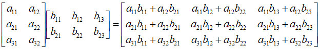
矩阵乘向量
在指定矩阵乘法作用下，将原始空间中的向量映射转换到目标空间中的新坐标。
矩阵乘向量
基本事实
矩阵与向量的乘法，本质上可以看作是对向量基底的一种改变
列的角度
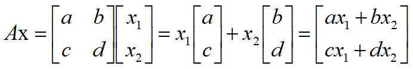
向量的基底变换
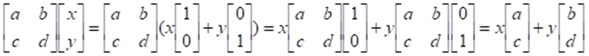
本质是将基底进行变化。
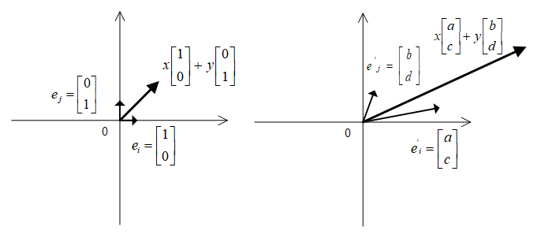
得到的是在原始空间中的新坐标(ax+by, cx+dy)，而在新空间中的坐标仍然是(x, y)
m×n矩阵乘以n维列向量
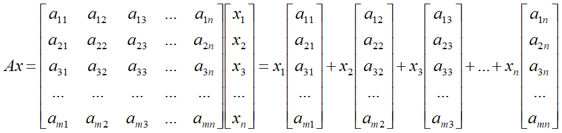
说明
当n > m的时候，显然这n个向量线性相关，因此不构成基底；
当n < m的时候，即使这n个向量线性无关，由于他们不能表示m维空间中的所有向量，因此也不能称之为m维目标空间的基底；
当且仅当n = m，且这n个向量线性无关的时候，他们才能称之为目标空间中的一组新的基底。
空间与映射（第二章）
矩阵
空间映射
由于矩阵乘法的作用，原始向量的空间位置甚至其所在空间的维度和形态都发生了改变，这便是矩阵乘法的空间映射作用。
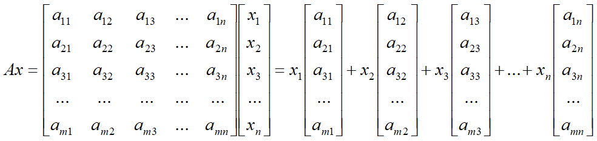
m<n矮胖矩阵空间压缩（降维）
对2×3矩阵，3个二维向量必然线性相关。下面进行分类讨论：
3个二维目标向量满足不全部共线
此时，三维空间被矩阵压缩成二维平面。
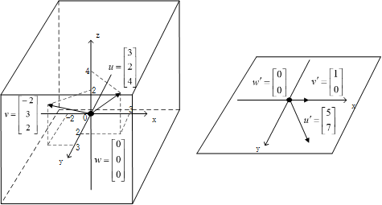
3个二维向量是共线向量
被压缩成平面内的一条直线。
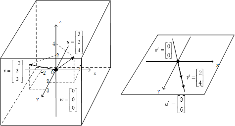
m>n高瘦矩阵无法覆盖目标空间
一个事物想凭空出现是不可能的。
对3×2矩阵
两个向量线性无关
映射到同一平面上
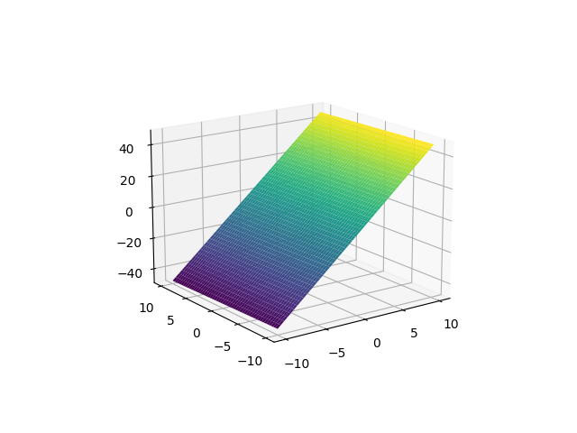
两个向量线性相关
映射到同一直线上
n×n方阵
对3×3矩阵
3个列向量线性无关
映射后得到仍是三维空间
线性相关但不共线
映射后到同一平面
线性相关且共线
映射后到同一条直线
秩
像空间：一个空间经矩阵映射后得到的新空间
像空间维度的决定因素：空间映射矩阵各列的线性相关性
由各列所张成的空间维数就是原始空间映射后的像空间维数——秩
秩也可以说成是该矩阵线性无关的列的个数
实现：
1 | import numpy as np |
逆矩阵和逆映射
逆矩阵
如果已知结果向量的坐标y去反推原始向量的坐标x，这个过程我们就将其称之为逆映射或者逆问题，因为逆映射也是一种映射过程，因此同样有矩阵与之相对应，那么我们就将表征逆映射的矩阵称之为矩阵A的逆矩阵，写作：A -1 。
零空间
对于给定的矩阵A，在映射的作用下满足等式Ax=0成立的向量x的集合，我们称之为矩阵A零空间，记作：N(A)。
如果一个矩阵A存在着逆映射，则意味着其映射后的点是要能被唯一还原的，因此显然，矩阵A的零空间N(A)对应的不能是一维直线或者是一个二维平面，而只能是一个点，也就是原始空间中的零向量。即，如果一个矩阵满足可逆，他的零空间N(A)必须是0维的。
列空间
一个原始空间经过矩阵A的映射得到的对应空间，本质上就是该矩阵各列所有线性组合的结果集合，我们就将其称之为矩阵A的列空间C(A)。
逆矩阵存在条件
首先，矩阵必须首先得是一个方阵，否则目标空间中的向量要么对应多个原始空间中的向量，要么找不到原始空间中的向量。换句话说，在y=Ax的映射中，对应在原始空间中的向量x的存在性和唯一性至少有一个被破坏了。
其次，在矩阵A是n阶方阵的前提条件下，以下的任意一个条件都与矩阵满足可逆性等价：
矩阵A的零空间的维数为0，或列空间的维数为n；
列向量a1, a2, a3, ……an满足线性无关。
实现
1 | import numpy as np |
向量空间和子空间
向量空间
向量空间当然不仅仅局限于Rn
那么针对一个向量集合V，如果任取V中的两个向量u和v，只要满足以下两个条件,这个向量集合V就构成了一个向量空间。
u+v仍然存在于V中；
任取标量c ，满足cu仍然也在V中。
子空间
如果一个向量空间U，他的子集V也是一个向量空间（满足向量加法和标量乘法的性质要求），那么V是U的子空间。
一个空间的子空间有以下四种形式：
- 空间自身
- 空间中过原点的平面
- 空间中过原点的直线
- 零向量自身
一个向量空间的任意子空间都必须包含零向量。
列空间
对于这个矩阵A而言，它包含了n个m维的列向量，那么矩阵A的列空间就包含所有这n个m维列向量的线性组合。
由于各列都在Rm 空间中，并且列空间中任意两个向量的和以及任意向量与任意标量的数量积依然都可以表示为列向量的线性组合的形式，意味着矩阵A的列空间C(A)是一个向量空间，并且是Rm 空间的子空间。
零空间
同样对于一个规模mn的矩阵A而言，所有满足等式Ax=0的向量x的集合，就被称之为矩阵A的零空间，我们将其记作：*N(A)。
我们依照定义来看，零空间也是一个向量空间，对于一个规模mn的矩阵而言，他的零空间里的向量都是n维的，因此零空间是空间*Rm里的一个子空间。
行空间
对于规模m×n的矩阵A，他的行空间就是由矩阵各行的向量所张成的空间。
矩阵A的行向量就是转置矩阵的列向量 。
矩阵A的行空间就是转置矩阵的列空间，我们将其记作：C(AT) 。
左零空间
对于规模m×n的矩阵A，他的左零空间就是转置矩阵AT的零空间，即满足：ATx=0 等式成立的所有向量的集合，我们将其记作N(AT)
秩与4个子空间关系
4个子空间：列空间、零空间、行空间、左零空间
列空间与零空间
列空间C(A)的维度就是矩阵A的秩r。
变化前原始空间是n维，线性映射后的列空间是r维，零空间N(A)的维数n-r。
列空间与行空间
线性无关的行向量个数与线性无关的列向量个数相等。
列空间C(AT)的维度也是矩阵A的秩r。
行空间与左零空间
C(AT)的维度为r，AT的原始空间维度是m，则左零空间N(AT)的维度是m-r。
解方程组
解个数决定因素
r=m=n
方阵映射过程不存在空间压缩，且任意一个向量都在矩阵A的列空间上。
方程组有唯一解
r=m<n
方阵映射过程存在空间压缩。
方程组有无数多个解
r=n<m
目标空间中挑选的向量b可能不在列空间上。
方程要么无解，要么唯一解
r<n&r<m
向量b位于矩阵A的列空间上
无数个解
向量b位于矩阵A的列空间之外
无解
从空间理解
当方程组有唯一解的时候，他的解就是一个向量。
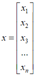
当方程组有无数个解的时候，实质上所有的解向量x就构成了一个解的空间，最终方程组解的表达式
当矩阵A是一个满秩方阵的时候，依据定义他的零空间就是一个唯一的零向量。
实现
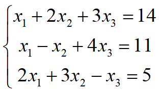
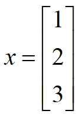
1 | import numpy as np |
结果：[1. 2. 3.]
近似与拟合（第三章）
投影
问题
线性方程组解问题
没有精确解的情况下，如何获得近似解
直线拟合问题
“最近”投影
- 向量b
- 投影方向p
- 误差向量e=b-p，该长度是最短距离
- p方向基向量a(A=[a1 a2 …… an])
- 系数x_hat，p=xa
- 投影矩阵P,p=Pb
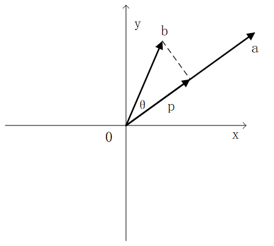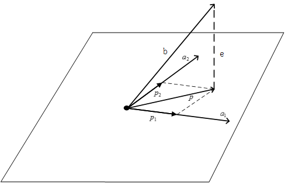
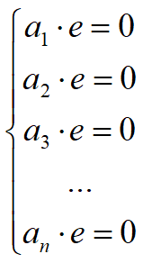
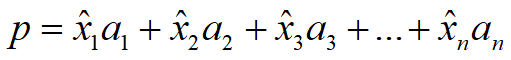
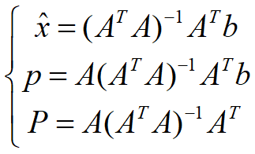
最小二乘法
互补的子空间
互补的子空间一方面由不同的基向量所张成，另一方面他们的维数之和为整个空间的维数。空间中的任意一个向量b，其在互补子空间上的投影向量之和，就是向量自身。
正交的子空间
子空间V和子空间W满足正交关系成立的条件是：子空间V中任意一个向量v和子空间W中任意一个向量w都垂直。
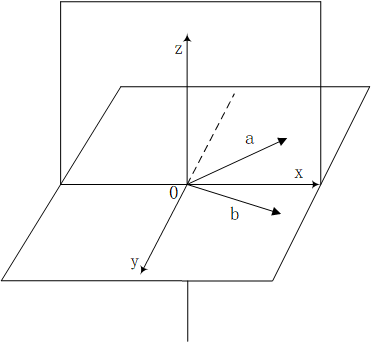
相互正交补的子空间
Rm空间中的两个互补的子空间，如果满足相互正交的关系，则他们满足正交补的关系，他们的空间维数之和应该为m。
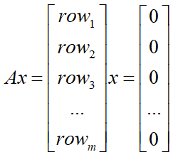
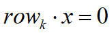
结论
- 矩阵 A行空间和零空间满足正交补的关系
- 转置矩阵的行空间和零空间当然也是相互正交的，因此，矩阵 A的列空间和左零空间在中同样满足正交补的关系
近似解
套用公式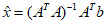进行求解。
n维空间中的向量x和向量y的距离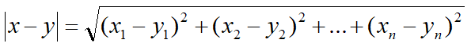
实现：
1 | import numpy as np |
运行结果：
[[0.83870968]
[1.87096774]]
最小二乘线性拟合
最小二乘法的目标就是使得误差向量e的模长最小，这个最优化的目标就被表示为：
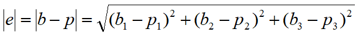
两个要点：
绘制一条距离三个点最近的直线，判定的指标是三个点到直线的竖直线，而不是直观上最容易想到的垂直线。
为什么叫最小二乘，最小二乘就是最小平方的意思，我们的优化目标就是去求解三条竖直线长度的平方和开根号后的最小值。
施密特正交化——寻找最佳投影基
简化投影计算
若矩阵ATA相乘的结果是一个单位矩阵I那真的就好了，由于单位矩阵I满足等式I-1=I成立，那么投影向量p的表达式就可以变得特别简单p=AI-1ATb=AATb。
标准正交化
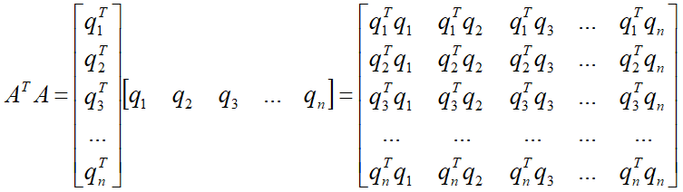
如果想要得到的最终结果，则我们选取的这一组列向量必须满足以下两个条件
在结果矩阵中，矩阵对角线上的元素必须都为1，即当i=j,qiTqj=1
在结果矩阵中，矩阵非对角线上的元素必须都为0，即当i≠j,qiTqj=0
QQT=I,Q不要求是方阵，当Q是方阵时，QT=Q-1
向标准正交向量上投影
我们用正交矩阵Q来代替一般矩阵A，同时由于QTQ=I的原因，之前推导出的投影向量p和投影向量P的表达式都得以简化：
施密特正交化
任意选取三个线性无关的向量：a，b，c，探索如何在他们的基础上最终通过运算
获得一组标准正交向量q1q2q3来作为三维空间 中更优的一组新基。
思路：首先从a，b，c三个向量中，通过运算变换得出三个q1q2q3然后再分别将其转化成模长为1的单位向量，由此得到最终的结果：一组标准正交向量。
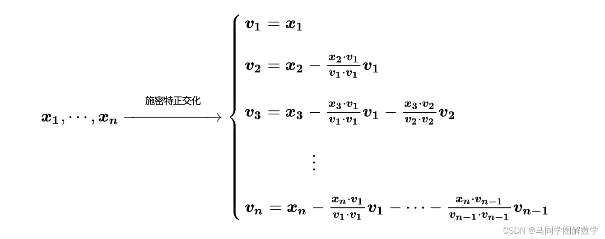
相似与特征（第四章）
相似变换
坐标值取决于基底
对于一个指定的向量而言，他在空间中的位置是绝对的，而他的坐标值却是相对的。向量坐标的取值依托于空间中所选取的基底。更直白的说法就是，对于同一个向量，如果选取的基底不同，其所对应的坐标值就不同。
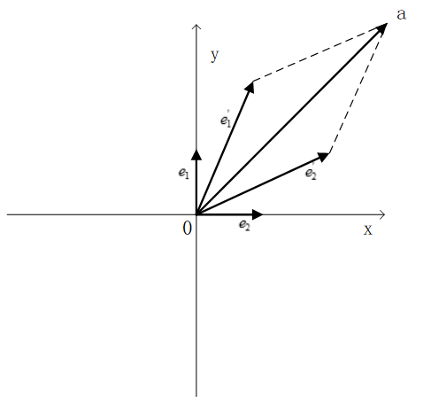
描述线性变换的矩阵也取决于基底
一个向量可以从某个空间中的位置P移动到位置Q，这里可以用一个特定的矩阵来表示向量空间位置的改变过程。如果我们选取的基底不同，同一个运动在不同基底下，显然对应的矩阵表示也应该是不同的。
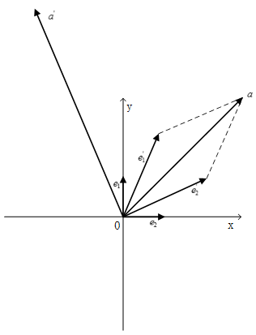
相似矩阵和相似变换
- 相似矩阵：指定向量的同一个空间变换，用来在不同基底下进行描述的不同矩阵，彼此之间称之为相似矩阵
- 相似变换：相似矩阵所表示的线性变换，彼此之间称之为相似变换
利用基底变换推导相似矩阵间的关系式
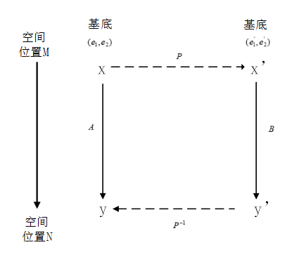
在基底 (e1, e2)下，坐标为x的向量通过矩阵A完成了线性变换的过程，线性变换后的向量坐标为x’，我们也可以通过矩阵P，将向量变换到新基底(e1‘, e2‘)下的坐标表示，即用新的基底下的坐标来表示向量，记作Px。
上述变换过程的矩阵 A=P-1BP
相似矩阵中的最佳矩阵
结论：对角矩阵
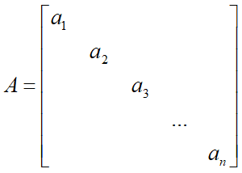
优势：
一个n维列向量在n阶对角矩阵的作用下，其线性变换的方式仅仅反映在各个维度轴向上的长度拉伸，而不对应着平移或者旋转变换。
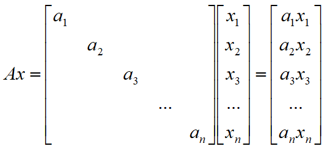
对角矩阵的优势之处还体现在连续的线性变换上连续的线性变换用矩阵的乘法来表示。
对角矩阵的构造方法
寻找到一个可逆矩阵P，使得转换后的结果为P-1BP=Λ
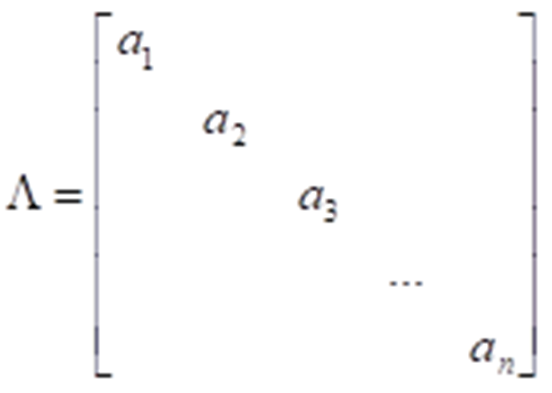
对角化
基本含义：只有主对角线上含有非零元素
构造对角化转换矩阵P的思路
通过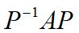的矩阵乘法形式得到矩阵A的相似对角矩阵。
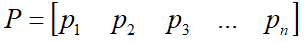 （pi为向量）
AP=PΛ

进一步具体化：
① 我们需要找到满足上述等式的这一组向量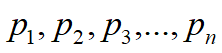
② 我们把与向量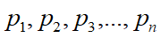 分别对应的值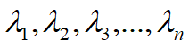依照顺序沿着对角线进行排列，就构成了与矩阵 A 相似的对角矩阵：
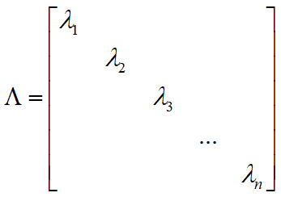
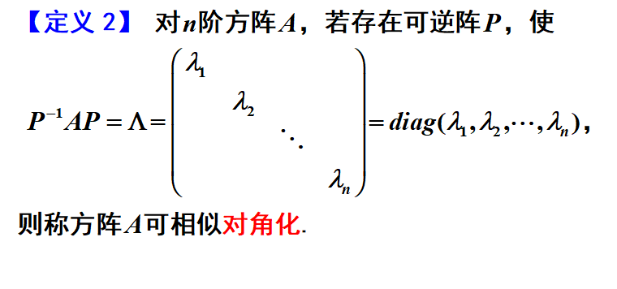
特征向量和特征值
Ap=λp的非零列向量pi和与之对应的标量值 λi，我们分别将其称之为方阵A的特征向量和特征值。
在方阵A的变换作用下，特征向量p的线性变换就是在其向量方向上进行λ倍的伸缩变换【几何意义】。
矩阵P要求必须是可逆的，也就是说方阵A的特征向量必须满足线性无关，这样矩阵A才能进行对角化。
(A-λI)p=0,用向量p位于矩阵的零空间中，由于向量p有非零向量的前提条件，因此矩阵是一个不可逆矩阵。
特征向量与特征值
几何意义
这个有关矩阵特征向量和特征值的核心表达式：从空间几何意义的角度来理解，对于一个方阵A，若向量p是他的特征向量，标量值λ是对应的特征值，则意味着向量p在方阵A的作用下，他的空间变换就是其长度沿着向量的方向进行λ倍的伸缩。
基本几何性质
矩阵特征值为0的情况
若方阵某个特征值0，Ap=λp=0，表示空间压缩变换。
是个不可逆矩阵，即奇异矩阵。
对角矩阵的情况
对角矩阵的对角线各元素是他的特征值
相似矩阵的情况
矩阵A的特征向量为p，特征值为λ，相似矩阵S-1AS的特征值保持不变，特征向量变为S-1p。推导：
(S-1AS)(S-1p)=S-1ASS-1p=S-1Ap=S-1λp=λ(S-1p)
特征向量的线性无关性
如果一个n阶方阵A，有n个两两不相同的特征值：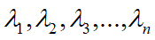，那么这些特征值所对应的一组特征向量 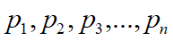 ，具备彼此之间线性无关的特性。
实现
1 | import numpy as np |
对于一个n阶方阵A，包括多重特征值在内，一共有n个特征值。对于任意特征值，如果对应的线性无关的特征向量与其重数相同，换句话说，即该矩阵A一共有n个线性无关的特征向量，那么由矩阵A的特征向量所组成的特征矩阵就是可逆矩阵，矩阵A就可以被对角化。
降维与压缩（第五章）
对称矩阵
对称矩阵基本特性
一个对称矩阵通过转置操作得到的结果仍然是他自身，即满足：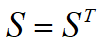 的运算要求
对阵矩阵S所蕴含的一个前提条件：他必须是一个方阵。
有一种获取对称矩阵的简单方法：一个矩阵乘以自己的转置矩阵，其所得到的运算结果必然是一个对称矩阵。
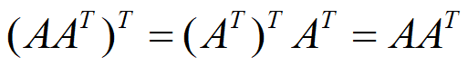
实对称矩阵一定可以对角化
对于一个任意的方阵，如果他的特征值两两不同，那么特征值所对应的特征向量彼此之间满足线性无关，这个方阵可以被对角化。
如果方阵有相同的特征值，他很可能存在线性相关的特征向量，那么如果发生了这种情况，该方阵就不能够被对角化了。
对于任意一个实数对称矩阵而言，他都一定可以被对角化。
换句话说，对于一个对称矩阵，无论他的特征值是否重复，他的特征向量都一定满足线性无关。
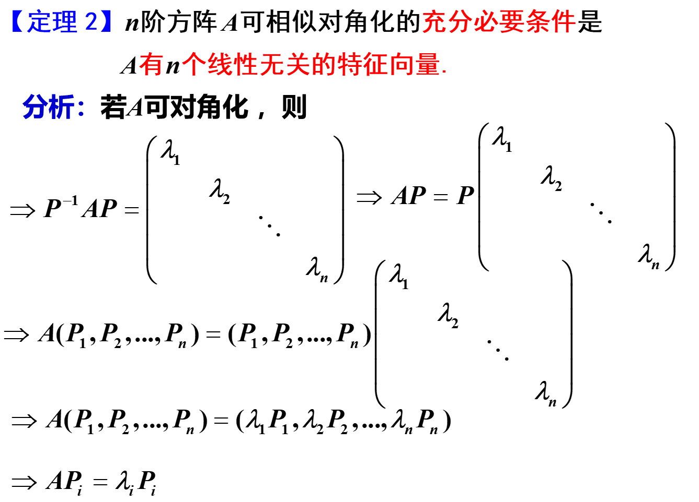
特征向量标准正交
任意一个实对称矩阵都可以获得一组标准正交的特征向量。
首先，实对称矩阵S一定能够被对角化，可以被写成的 形式，其中对角矩阵Λ的各元素一定均由实数构成，并且最为关键的一点是任何一个对称矩阵分解得到的特征向量矩阵都可以是标准正交矩阵。
推导过程：S=ST =>
要使该等式相等，需要满足对应位置元素相等，因此X-1=XT.
实对称矩阵的对角化过程变换成更好的形式，写作.
对称矩阵的分解形式
对称矩阵S一定可以得到由一组标准正交特征向量所构成的特征矩阵Q。即，矩阵Q可以表示成 的形式。
广义理解为方阵之间满足”正交”。
AAT与ATA的秩
对于任意一个m×n形状的矩阵A，他的列向量中线性无关向量的个数等于其行向量中线性无关向量的个数。
Ax=0与ATAx=0同解，矩阵A和矩阵ATA这两个矩阵拥有相同的零空间。
结论：
ATA对称矩阵的正定性描述
如果一个矩阵的所有特征值都为正，我们称他是“正定的”矩阵，如果均为非负（即，最小的特征值为0），相当于结论上稍稍弱了一些，我们称之为“半正定的”矩阵，如果他含有负的特征值，那么显然，他是非正定的。
就正定性而言，一般的对称矩阵其实没有太多的特殊性，他的特征值一定是非负的，换句话说，他至少是半正定的。
实对称矩阵中非零特征值的个数等于该矩阵的秩。这个结论非常明显：因为矩阵A与相似对角化后的矩阵 拥有相同的特征值，同时由于相似性可知：这两个矩阵的秩相等。
结论：对称矩阵ATA的所有特征值都满足非负性，如果A的列向量满足线性无关，则该矩阵是一个正定矩阵，其特征值均为正。
AAT与ATA的特征值
AAT与ATA拥有完全一样的非零特征值。
对称矩阵的性质总结
数据分布的度量
期望与方差
期望
衡量的是一组变量 取值分布的平均值，我们一般将其记作
方差
反映的是一组数据的离散程度。通俗的说就是：对于一组数据而言你，其方差越大，数据的分布就越发散，而方差越小，数据的分布就越集中。
定义式：，其中μ=E[X]
实现
1
2
3
4
5
6import numpy as np
eng, mat, phy = np.loadtxt('score.csv', delimiter=',',
usecols=(0, 1, 2), unpack=True)
print(eng.mean(), mat.mean(), phy.mean())
print(np.cov(eng), np.cov(mat), np.cov(phy))数据（score.csv）：
| 78 | 95 | 98 |
| —— | —— | —— |
| 79 | 80 | 77 |
| 72 | 65 | 58 |
| 85 | 90 | 90 |
| 74 | 71 | 75 |
| 72 | 56 | 62 |
| 70 | 77 | 80 |
| 92 | 84 | 79 |
| 88 | 100 | 99 |
| 81 | 88 | 83 |结果：
79.1 80.6 80.1
54.98888888888888 188.04444444444442 181.87777777777777
协方差与协方差矩阵
对于随机变量X和Y，二者的协方差定义：,其中μ，v分别是随机变量X和随机变量Y的期望。
当随机变量X和随机变量Y的协方差为正的时候，表示当X增大时，Y也倾向于随之增大；而当协方差为负时，表示当X增大，Y却倾向于减小；当协方差为0时，表示当X增大时，Y没有明显的增大或减小的倾向，二者是相互独立的。
协方差矩阵表达：
实现：
1 | import numpy as np |
结果：
[[ 54.98888889 70.82222222 56.76666667]
[ 70.82222222 188.04444444 175.15555556]
[ 56.76666667 175.15555556 181.87777778]]
显然，协方差矩阵是一个对称矩阵
总结：方差度量了变量自身的离散程度，而协方差矩阵表征了两组随机变量之间的相关程度。
利用特征值分解（EVD）期望与方差主成分分析（PCA）
数据降维的需求背景
随着样本特征属性数量的增多，我们需要分析处理的数据量也是直线上升的，在进行样本聚类、回归等数据分析的过程中，样本的数据维度过大，无疑会使得问题的研究变得愈加复杂。
因此，这种现状让我们感觉到，用这么多彼此相关的特征属性去描述一件事物，一方面非常复杂，另一方面似乎也显得不是那么有必要。我们希望能在原有基础上减少特征属性的数量。
数据降维目标
特征维度要变小，不能使用那么多的特征属性了。
描述样本的信息损失要尽量少。数据降维，一定伴随着信息的损失，但是如果损失的太多了，自然也就失去了意义。
主成分分析法降维的思路
要考虑去除掉特征之间的相关性，想法是创造另一组新的特征来描述样本，并且新的特征必须彼此之间不相关。
在新的彼此无关的特征集中，舍弃掉不重要的特征，保留较少的特征，实现数据的特征维度降维，保持尽量少的信息损失。
很明显简单粗暴地降维是不可取的
剖析PCA
构造彼此无关的新特征
要让两个特征彼此无关，则要让这两个新特征的协方差为0。而原始特征的协方差不为0。
实施主成分分析的具体方法：
如果X和Y的均值都为0，那么协方差的式子就会变得简单。
协方差定义：
操作方法：每个变量减去其均值，X每个变量减去μ，Y每个变量减去v。
不会改变方差与协方差，离散程度没有改变。
经过零均值化处理后的X和Y协方差矩阵如下：
显然
C是对称、正定的满秩矩阵，一定能对角化，且特征值都是正的
取一组新基表达，要求彼此正交
问题变为寻找让C对角化的矩阵P
使用前面结论：对称矩阵一定可以得到由一组标准正交特征向量构成的特征矩阵Q，P=QT。
实现
1 | import numpy as np |
结果：
[[6. 4.]
[4. 6.]]
1 | import numpy as np |
结果：
[[-2. -2. 0. 4. 0.]
[-4. 0. 0. 2. 2.]]
[[6. 4.]
[4. 6.]]
新特征取舍
最大方差理论:方差越大，信息量就越大。
方差越大的特征，表明这个特征里数据分布的离散程度就越大，特征所包含的信息量就越大；反之，如果特征里数据的方差小，则意味着数据分布集中，表明其包含的信息量就小。
方差λ就是方阵C的特征值
主成分贡献率：
n个特征的降维
奇异值分解（SVD）
Av=σu奇异值分解
矩阵A是一个m×n形状的矩阵，他所表示的线性变换是将n维原空间中的向量映射到更高维的m维目标空间中去，这个等式意味着在原空间中找到一组新的标准正交向量在目标空间中存在着对应的一组标准正交向量。
当矩阵A作用在原空间上的某个基向量上时，其线性变换的结果就是对应在目标空间中的基向量沿着自身方向伸长倍。
分解过程中的细节
在维数不等的原空间和目标空间中各找一组标准正交基，就轻轻松松的把对角化的一系列苛刻要求给化解掉了。直接得到了数据采样矩阵A的矩阵分解形式
【学长小课堂】什么是奇异值分解SVD—SVD如何分解时空矩阵
利用奇异值分解进行数据降维
数据降维
行压缩数据降维
列压缩数据降维
对矩阵整体进行数据压缩
应用
奇异值分解
1 | import numpy as np |
行列压缩
1 | import numpy as np |
数据压缩
1 | import numpy as np |
实践与应用（第六章）
推荐系统
1 | import numpy as np |
图像压缩
test.png
1 | import numpy as np |
函数与复数域（第七章）
傅里叶级数
函数：无穷维向量
函数反映的是自变量和因变量之间的一种映射关系，如果我们给定自变量元素x，对他施加映射规则f，就得到了因变量元素y，即我们所熟悉的表示方法：y=f(x)
寻找一组正交的基函数
两个n维向量u和v进行内积运算的运算法则：
如果要满足向量u和向量v之间彼此正交，则他们的内积运算结果必须为0。
两个函数内积的表示方法：
一组满足彼此之间两两正交的无穷序列作为基函数
1 | from sympy import integrate, cos, sin |
结果：
0
0
0
周期函数与傅里叶级数
周期为2π的函数的傅里叶级数f(x)，这里有几点我们需要注意一下：
周期为2π 的函数 被表示成了正弦函数sinkx和余弦函数coskx所构成的基函数的线性组合，并且在通常的情况下，基函数的个数是无穷多个。
这一组基函数是彼此正交的
按照傅里叶级数对函数进行展开的操作，其物理意义是非常重大的
傅里叶级数中的系数
架起了时域和频域之间的联通桥梁，从一个随着时间 不断变化的函数曲线中提取出了他的频谱。傅里叶级数中的等称之为傅里叶系数。
各个基函数彼此之间满足正交的特性：
系数
系数
复数域中的向量和矩阵
共轭转置
厄米特矩阵
实数域内的转置操作就是复数域中共轭转置的一种特殊情况。
引出复数域中的一个极其重要的矩阵：厄米特矩阵，又称为自共轭矩阵。
矩阵S满足SH=S
共轭转置矩阵等于他自身，矩阵S就是一个厄米特矩阵，他的对角线上的元素必须是实数。
厄米特矩阵性质：
厄米特矩阵S的特征值一定是实数。
厄米特矩阵S中，不同特征值对应的特征向量满足彼此正交。
酉矩阵
矩阵Q是一个方阵，他的各列 由一组标准正交向量所构成，方阵Q满足的等式关系，我们称之为正交矩阵。
在复数域中各列满足标准正交的方阵Q我们也给他起了一个新名字，叫酉矩阵。很显然，基于复数向量内积的定义，这里实矩阵的转置操作就应该变成复数矩阵的共轭转置操作，即
酉矩阵Q是一个方阵，满足
傅里叶矩阵与离散傅里叶变换
傅里叶矩阵的用处：傅里叶矩阵是用来辅助计算机进行傅里叶变换的。
机器能够处理什么样的信号？一方面是有限长度的信号，另一方面是离散的信号，这里的离散包含两个方面，一个是傅里叶变换前时域的信号必须离散，另一个是变换后频域里的频谱也必须离散。
要想使用机器来进行傅里叶变换，就必须满足这三个条件，这称之为离散傅里叶变换（DFT）。
傅里叶矩阵是离散傅里叶变换中的核心数据结构，而通过针对矩阵结构进行优化设计而形成的高速、优化的算法，我们称之为快速傅里叶变换，也就是我们常听说的FFT。
最后我们利用python语言来实际进行离散傅里叶变换的处理，首先我们来看看我们要处理的时域信号：
1 | import numpy as np |
（完）